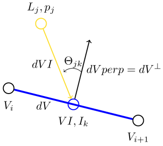
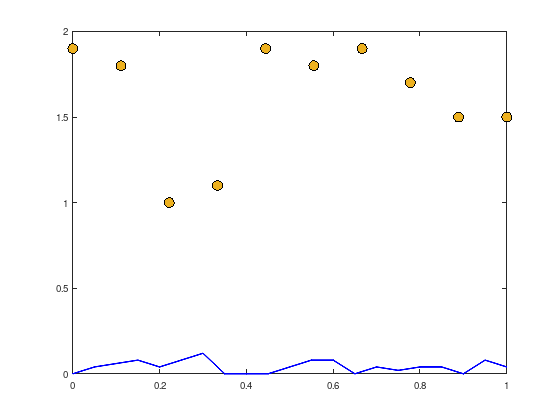

MO01 - The illumination problem¶
Source: https://see.stanford.edu/Course/EE364A (hw3extra.pdf task 3).
A physical law from photometry states
the illuminance on a patch \(I\) (SI unit: lux \([lx = \frac{lm}{m^{2}}]\)) depends on:
the luminous intensity \(p\) (SI unit: candela \([cd = \frac{lm}{sr}]\)) of the lamps,
the distance to the respective patch \(r\) (SI unit: meter \([m]\)),
the angle \(\Theta\) to between the lamp and patch.

In case of the given problem data, there are \(m = 10\) lamps \(L_{j}\), \(j = 1, \ldots, m\), with assigned luminous intensities \(p_{j}\) and \(n = 20\) patches with respective illumination values \(I_{k}\), \(k = 1, \ldots, n\).
In the following the SI units are neglected. The following linear dependencies between \(I_{k}\) and \(p_{j}\) hold:
with \(r_{kj} = \lVert dVI \rVert\) and
To regard all lamps \(p_{j}\), the luminous intensities have to be summed up:
Regarding all \(n = 20\) patches, the following overdetermined linear system of equation \(I = A \cdot p\) follows:
As ultimate goal, all patch illuminations \(I_{k}\) should be as close as possible to the desired illumination \(I_{des}\).
Finally, the following constrained non-linear optimization problem can be formulated:
The objective function formulates a quality measure \(f_{optimal}(p)\) depending on the luminous intensity of the lamps \(p_{j}\), that minimizes the maximal logarithmic distance between the actual patch illumination \(I_{k} = A_{(k,:)}p\) and the desired patch illumination \(I_{des}\).
Last but not least, the constraints might seem trivial, but are for a practical application of importance: the luminous intensity of a lamp \(p_{j}\) has the physical constraints that it cannot “shine negative” and it cannot “shine brighter than possible”, \(0 \leq p_{j} \leq p_{\max}\).
L = [linspace(0,1,10);
1.9, 1.8, 1.0, 1.1, 1.9, 1.8, 1.9, 1.7, 1.5, 1.5];
m = size (L, 2); % number of lamps
% begin and endpoints of patches
V = [linspace(0,1,21);
.4*[0.0, 0.1, 0.15, 0.2, 0.1, 0.2, 0.3, 0.0, 0.0, 0.0 , ...
0.1, 0.2, 0.2, 0.0, 0.1, 0.05, 0.1, 0.1, 0.0, 0.2, 0.1]];
n = size (V, 2) - 1; % number of patches
plot (L(1,:), L(2,:), 'ko', 'MarkerSize', 10, ...
'MarkerFaceColor', [0.9290 0.6940 0.1250]);
hold on;
plot (V(1,:), V(2,:), 'b-', 'LineWidth', 2);
% construct A
warning('off', 'Octave:colon-nonscalar-argument');
dV = V(:,2:n+1) - V(:,1:n); % tangent to patches
VI = V(:,1:n) +.5*dV; % midpoint of patches
A = zeros (n, m);
for i = 1:n
for j = 1:m
dVI = L(:,j) - VI(:,i);
dVperp = null (dV(:,i)'); % upward pointing normal
if (dVperp(2) < 0)
dVperp = -dVperp;
end
A(i,j) = max (0, dVI'*dVperp/...
(norm(dVI)*norm(dVperp)))./norm(dVI)^2;
end
end

Read task 3 from hw3extra.pdf and try to find an optimal solution with
Uniform \(p_{j}\)
Least-sqares
Linear Programming
Convex Programming (https://yalmip.github.io/ or http://cvxr.com/cvx/).